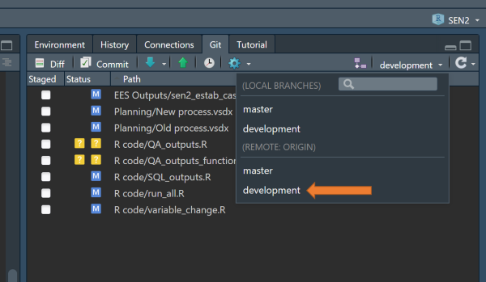
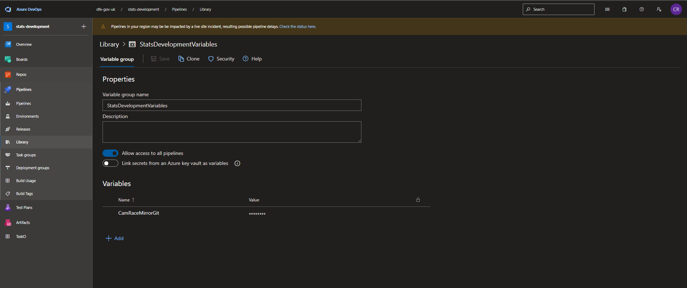
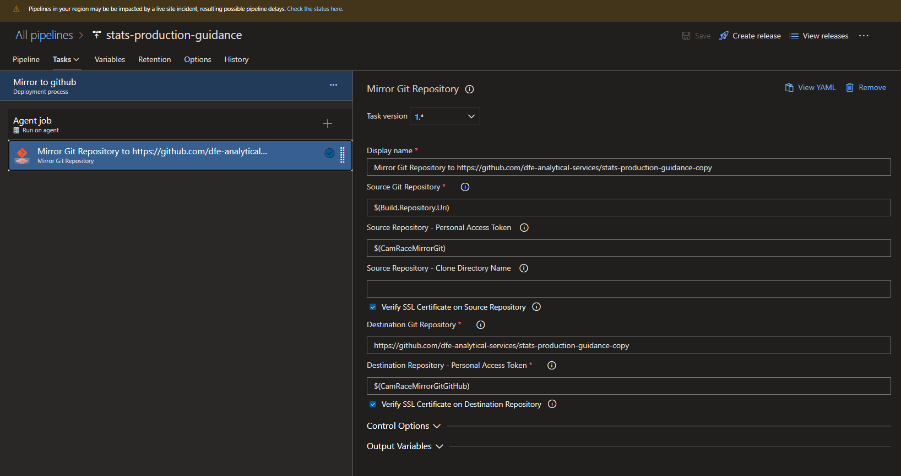

Git
Guidance and tips for version control with Git
What is Git
It is a version control software. It is by far the best of its kind and is widely used by software developers and data scientists.
What is Git for
Git is a version control software that tracks changes to files within a folder that you assign Git to track. It works best with plain text files such as flat data files, code scripts and markdown documents. These folders are known as repositories and can be held and managed securely in a central online place such as GitHub (best for public), GitLab (can be good for either public or private) and Azure DevOps (best for private). We can easily mirror our Azure DevOps repositories in the DfE Analytical Services area on GitHub.
It is widely used across DfE and integrates neatly with our use of Azure DevOps, as well as being the current leading version control software in the world of coding with over 87% of 74,298 stack overflow users using it.
How to install Git
Download it from the Git website.
Git doesn’t have an IDE, instead it will either integrate with your current IDE such as RStudio or Visual Studio Code, or run in the command line.
When you first try to use Git you may be prompted for a GitHub username and password, if this happens you should generate a Personal Access Token (PAT) and use this as your password.
Best places to start
Contact us about attending one of our in-person Git workshops
If you’re new to Git and are unsure of what it does, then take a look through these Git for humans slides
David Sands’ guide to getting started with Git is a helpful place to start. When watching video 03, do NOT run the code to change your proxy settings! Ignore this part of the video.
Gooey Git by David Sands, provides a very neat overview of using git with R.
How to work with git
Git Bash
Git Bash allows you to run git commands without opening another IDE. You’d often need to use Git Bash to set your user settings, amend your proxy settings and clone repositories.
Git with RStudio
Git with R studio is a neat user interface for git. You don’t need to use any git bash commands, and everything is done using point and click. This is useful for day-to-day version control, but does not support the full functionality of git.
However, you can still run the full suite of git commands by simply typing them in the “Terminal” of RStudio.
Quick reference lookup
- GitHub have created a cheat sheet for git commands.
Other resources
Avison Ho and Linda Bennett gave this coffee and coding presentation on version controlling SQL with Git.
Happy Git is a useful (though detailed) guide to setting up and using git.
Adam Robinson and Zach Waller have produced guidance for how to use git in Azure DevOps (formally VSTS), which gives a detailed guide on how to use version control software in DfE analysis.
While also mentioned above as a resource for learning R, chapter 6 of ESFA’s guide to R and Git is also worth looking at for Git alone.
Microsoft have produced documentation on using Git within AzureDevOps.
For those wanting to go deeper into understand the variety of git commands and what they do, there is a great online visual resource.
We also have a number of helpful sections on using git in practice at the end of our RAP for Statistics page.
Tips for using Git
Commits
The best advice is to just commit regularly, like you would if you were saving a word document.
Each commit is a saved point in time that you can easily roll back to if needed. If you want to know more about how to do this, see the reverting a commit section below.
Commit messages
The best advice for commit messages is to keep them clear, simple and brief.
It is recommended to use the imperative tone e.g. Add fix for joining pupil table rather than Added ... or Adding .... Other general recommendations include:
- Keep it short (max 150 characters if possible) - committing regularly can help with this
- Explain what the change is and why the change was needed. You generally don’t need to go into the detail of how the change was made as this should be visible from the code
- e.g.,
Add x to prevent yorAdd x so that y can z
- e.g.,
- Don’t assume the reviewer understands what the original problem was
- would someone else looking at it, or even yourself in a week’s time know what the commit was doing?
- Capitalise the first letter and don’t end with punctuation, it is unnecessary
If you’re struggling to know what to write, remember the reader (including future you) is unlikely to have much context when looking through the version log to find the right point in time, try considering the following:
- Why have I made these changes?
- What effect have my changes made?
- Why was the change needed?
- What are the changes in reference to?
Never leave a commit message blank. The information you include could really pay off later when you need to remember what you worked on, or share it with other people.
There are specific conventions outlined in conventional commits, that are worth familiarising yourself as you begin to use Git more. Following these conventions will help you write messages that are consistent with over 100 million other Git users around the world.
In RStudio
Once you are happy with changes and want them to be in the latest version of your branch for all of your team to see, you can push “commits” up.
- When you make a change to a file, this will pop up in the “Git” window of your R console. Select the files you want to commit by ticking the “staged” box next to them.
- This will bring up a new window. Add a comment describing your additions/changes, and click commit. You will see all the staged files disappear. Then click “Push” to push the committed files up to the online repository for all to use.

- When another member of your team makes a commit and you want to pull this into your local area to check and work off the latest version, click on the blue “pull” button.

Branches
David Sands has produced a very helpful video on how to use branches in git, which also covers how to tackle merge conflicts if and when they arise:
When you create a git project, it will automatically create a “main” (sometimes “master”) branch for you. This is where code that has been QA’d and you are happy with should sit.
- It is good practice to have at least one other branch, we tend to call it “development”. This is the branch where you will be doing most of your work. To open a new branch, navigate to “branches” and click on the blue box highlighted below

Having two separate branches means that if anything goes wrong in the “development” branch, the “main” or “master” branch is still unaffected and runs without issue. This lets you test and QA the code more thoroughly before merging into your main branch.
When working on your project, make sure that you are in the right branch. You can check this by navigating to the “Git” tab in RStudio as demonstrated below.

Pull requests
When you have got to a place with the code and your committed changes where you are happy for it to be QA’d, you can open a pull request. This gives your team a chance to QA your changes before merging the branches together.
Navigate to “Pull Requests” in the “Repos” tab of Azure DevOps and click the blue “New pull request” button.
This will take you to a new window. Here, you can add:
- Title, tell your team what has changed
- Description, tell your reviewer what they should check
- Reviewers, add multiple if needed.
As a reviewer, to approve a pull request, follow the link in your email and click “approve” in the blue box. When all reviewers are happy for this to be the new master branch, click “complete”.
Creating pull requests in GitHub follows a broadly similar process and should be intuitive from the above steps for Azure DevOps.
Merging a branch into another one
If you want to merge a branch into another without doing a full pull request, you can do this using a terminal.
This may happen if you are working on a feature branch, and want to merge the latest changes to the master branch back into your feature branch before opening a PR to master with your own changes. Often this can let you deal with nasty conflicts up front, or allow you to keep working on your feature but update to have something new that’s on master.
Start off by checking out your desired target branch - git checkout mybranch. Then merge in the branch you want (e.g. master) - git merge master.
Cherry picking
If you want to cherry pick specific commits for PR, you can do this by cherry picking the commits you want to use, and creating a new branch that has only those new commits that you want.
To start off you’ll need to identify the commits you want. In the terminal, run git log --oneline to get a log of commits for your current branch, use git log --online BRANCHNAME to specific the branch for the log. This gives a list of commit hashes and messages (stackoverflow response defining git hashes and commmit ID’s). You can press enter to get more commits, or q to quit
Then go to the branch you want the commit to appear on and cherry pick your commits. Often, if this is to hop around something on a development to master pr, you would create a second development branch, cherry pick commits to there, and then PR that to master and delete the branch after merging.
On the branch you want to PR (i.e. your copy of a development branch purely for merging only cherry picked commits) run git cherry-pick COMMITHASH to add the specified commit, or git cherry-pick HASH1^..HASH4 for a specified list of commits (inclusive).
Happy days!
Visualising your tree
You can use gitk --all to visualise a tree of all previous commits up to this point.

Getting commit IDs
Commit IDs are the way Git identifies unique commits. They’re really helpful if you ever need to revert back to a previous commit if you’ve made a mistake.
There are lots of different ways to find out commit IDs:
Visit the repo in Azure Devops and go to the commit of interest. At the top of the page there is a commit ID you can copy.
Navigate to the repo in your file explorer, then open up Git Bash and type
git log --pretty=format:"%h - %an, %ar : %
OR
git log --pretty=oneline
There are a number of customisable versions of this, more information is available on the Git website.
Reverting a commit
Made a mistake and need to revert? No problem! Reverting commits in git creates a new commit reversing your accidental commits, bringing you back to an earlier point in your branch.
For rolling back on a branch, you should revert any changes so that you’re not erasing history others might have pulled/cloned. E.g. If you want to revert the last 3 commits on master:
git revert --no-commit master~3..master
The no commit argument means that it just makes the reverts locally, and you can then commit them all as a single revert commit. If you don’t use --no-commit then it will start doing individual revert commits for you for each commit you’re reverting.
You can also revert back to a particular commit ID:
- Navigate to the repo in your file explorer, then open up Git Bash and type :
git revert [PASTE COMMIT ID HERE]
This opens up a window that asks you to write a commit message. You can skip this step as it automatically writes a revert message for you. Enter
:wqwhich quits the writer window.You can now push these changes to Azure Devops by entering
git pushinto the git window
Tagging release versions
It can be useful to tag specific commits or releases at key points in time. For us a common example will be each publication cycle, to tag the version of the code used to process data for a particular release or amendment.
Guidance on how to tag releases using git can be found on the draft version of the BPI code guidance
Fix: cannot resolve proxy
If you get this error when trying to pull / push to a repository from a DfE laptop:
fatal: unable to access 'https://dfe-gov-uk.visualstudio.com/stats-development/_git/ees-analytics-new/': Could not resolve proxy: mwg.proxy.ad.hq.dept
Then try running the following git command to clear the proxy settings in your git config file:
git config --global --unset http.proxy
Cleaning up local branches
Essentially this finds all merged (old) branches, makes sure to not include master or development (can rename or add more if appropriate) and then runs those branches through the delete command. To be safe, run the first two thirds first, to print out the list of what you’ll be deleting:
git branch --merged | egrep -v "(^\*|master|development)"
Then if you’re happy, run the whole line:
git branch --merged | egrep -v "(^\*|master|development)" | xargs git branch -d
That should be all local branches tidied up. Now to complete the job you can prune the tracking branches you have set up, usually this will just be:
git remote prune origin
Though you can use git remote -v to find other remotes if you have them.
Creating PATs
PATs or Personal access tokens, are a preferred way to authenticate into repositories through code. Creating a PAT in GitHub is relatively intuitive.
In Azure DevOps, you can do this by following Microsoft’s documentation on creating a PAT in Azure DevOps.
Storing secure variables
Azure DevOps
In Azure DevOps you can securely store variables that are then used by your pipelines by making use of variable groups.
First create a variable group by navigating to Pipelines > Library. Enter any variables you want to store here and make sure to change the variable type to secret if appropriate (i.e. login credentials or PATs).

Then, in the pipeline you want to use the variables in, go to Variables > Variable groups and link the variable group as shown below. You can then call upon the variables as needed in your pipeline.

GitHub
In GitHub you can store sensitive variables as encrypted secrets.
Mirroring a repository
There may be times when you have a repository in one place, such as Azure DevOps, but want to mirror the code and any changes to it in another place, such as GitHub. This can be for many different reasons, though commonly for us it will be to open up our code across government. Azure DevOps doesn’t provide us with easily publicly visible code repositories, however GitHub does.
To mirror a code repository from Azure DevOps, use the mirror git repository extension (already installed on dfe-gov-uk instance), make use of the PAT and secure variables sections above and then add a job to your pipeline and enter your parameters in the fields as per the example below:

Fixing the “JSON token 4” error
This error can appear when you are trying to push changes to Azure DevOps.
If it appears and you have not changed your password recently, try locking your laptop and seeing if on re-login it prompts you for a password change.
If you have changed changed your password recently, try signing out of Azure and then back in again.